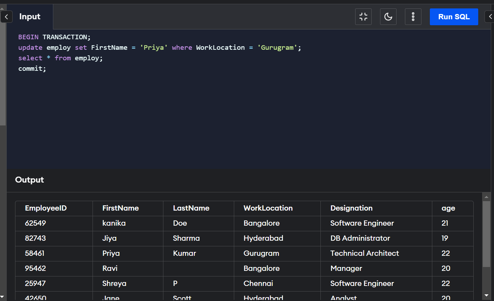
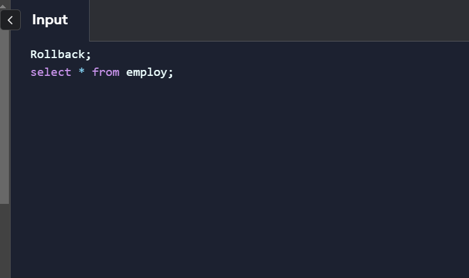

Commit and Rollback
Commit
The COMMIT command is an essential part of SQL for saving database changes. It's executed after a DML (Data Manipulation Language) statement, such as INSERT, DELETE, or UPDATE, to ensure permanent changes. Transactions are a set of SQL commands executed as a single unit of work. Without the COMMIT command, any DML operations performed are only visible to you. When you execute the COMMIT command, the changes made in the database are saved and become visible to all users. You can use a SELECT statement to check the updated record or data from the table that is modified. Thus, by using the COMMIT command, you can ensure that your SQL transactions are complete and the changes made to the database are permanent.Syntax of COMMIT command in SQL:
COMMIT;
It is important to note that the COMMIT command can only be used in conjunction with transactions. It cannot be used in isolation to save changes to the database. Transactions can be started using the BEGIN TRANSACTION or START TRANSACTION command, and can be rolled back using the ROLLBACK command.
Rollback
ROLLBACK leads the current transaction to traverse back, i.e., it reverts all the updates performed by the SQL statements and restores the database to the way it was before the first statement of the transaction process. These are a few factors on which ROLLBACK is usually decided on:Duration for which the transaction has been running
Already updated data by transaction
Data yet to be updated by the transaction process.
Data changes captured in the log files get discarded and are not reflected in the database. Old values can be restored by ROLLBACK using the log entries. That is why this process is also known as "Undoing".
Syntax:
ROLLBACK;
ROLLBACK in SQL is a method of undoing the changes made to the database. The old values are therefore restored, and the database disk changes are discarded. Now that we know how to revert back the changes in a database, it's time to play around with some SQL codes on your editor.

